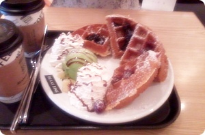
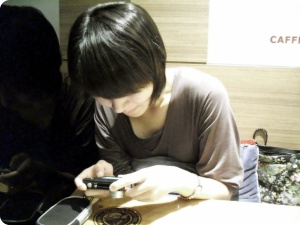

저번주 일주일
이상하게 바빴음 ;ㅂ;
미친듯이 바빴음;;;;;;;; 아침9시에 나가서
월화는 거진 막차타고 집에들어오더니
수목금은 아예 막차도 끊겨 새벽에 택시타고 귀가
3일동안 택시비로 얼마를 낸겨 @_@;;;;
내가 원래 이런인간이 아닌데 이상하다?이상하다?
를 외치믄서 밖으로 뽈뽈뽈뽈~;;;;;
수요일이 넘어가니까
이제 싫어 ㅜㅜ 집에서 쉬고싶어 ㅜㅜ 뒹굴고싶어~~!!를
외치믄서 야외(?)활동에 전념했음;;;; OTL
울집 김여사는 이런나를 보고
나가논다고 좋아하셨다;;;
(항상 집에서 추레한 모습으로 뒹구니께;;;)

한국은 좋은나라입니다 여러분 ㅜㅜ
맛난게 넘 많아 헝헝
빈스빈스 와플 훌륭했당///////
이날 명동서 분식집도 갔는데
최근 떡볶이집의 체인점화? 브랜드화? 가 유행인듯
여기저기 많이 보였다

이건 7월 한국오자마자 첨으로 북꼬북꼬씨와 커피한사발 할때의 사진
디카에 무슨사진이 있길래 저리 음흉하게 웃고있는거지;;;;
그리고 금요일은 지인의 도움으로
첨으로 스모키를 해봤다 +_+
(해봤다..........라기보다는 해줬지 그분께서 ^^;;;;)
내가 하는 마구잡이식 '공연장용 팬더화장'말구
제대로된 슴옥히!!!
워우~~능력자님 캄샤 ㅜㅜ
이런기술을 배워야 하는데 말입니다!!!
아이라인 그리는게 세상에서 젤 어려워용 ㅠㅠ
사진은 촘 충격적일수도 있으니 아래로 아래로~~~
.
.
.
.
.
.
.
.
.
.
.
.
.
.
.
.
.
.
2X에 제대로 화장해본게 손에꼽는인간;;;;;;;
사실 화장을 하긴하는데;;;;; 문제는 아무도 몰라준다는것;;
심지어 어떤날은 나름 열심히(?) 화장하구 외출할려하니
엄마님께서
"나갈때 거 화장좀 하지?" 라고 하신적도있........;;;; OTL
색조화장 진해지면 어색할까봐 구입할때도 항상 점원에게
"색 젤 약한걸로 추천좀 해주세요~~" 라고 하는데
그럴거면 뭐하러 바르냐고 동생곰이 물어봤다 ㅡㅡ;;;
왜긴;; 최후의 양심이지 ㅡㅡ;;;;;;;
예기치 못한 일거리도 생기구
친구들하구 신나게 놀기도 하구
변함없이 커피숍출근도 하고(케키종류많은게 젤 행복해용//ㅅ//)
잘놀고있습니다 케케
(그리고 8월도 벌써 반이나 지나갔다는거에 깜놀 @_@)
그나저나 이미 한국집에서는 내방이 없어져서;;
(엄마님 공부방 된지 오래;;)
얹혀살려니 여기저기 옮겨다니느라 죽겠음;;
작업하기에는 동생곰방 컴이 최고인데
저녁11시전에 비켜줘야구
엄마님방꺼는 바닥에 앉아서 하는거라 오래사용하면 허리가 아파 ㅜㅜ
4인가족에 컴이 4개인데 (데스크톱 2개 노트북2개;;;)
막상 사용할려구 하면 다 마땅치 않은건지 요상시렵다능;;;;;;